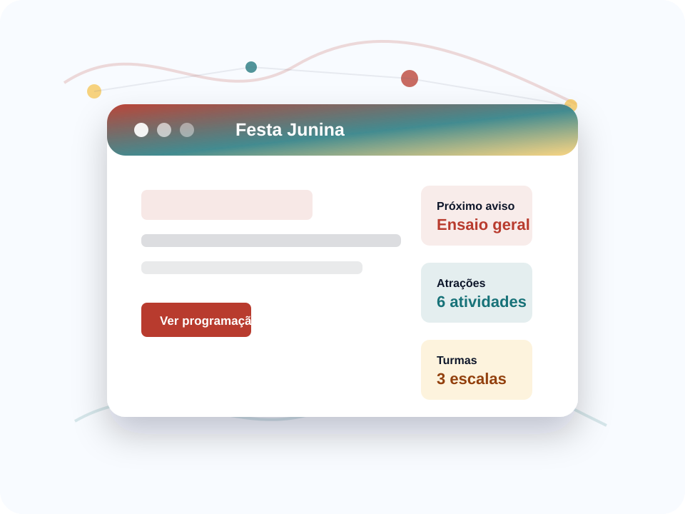

Programação
Horários e atrações ficam disponíveis para consulta rápida.
Avisos e ajustes da festa junina em uma página simples.
Um site para informar os alunos sobre horários, combinados, atrações e mudanças relacionadas à festa junina da escola.

Horários e atrações ficam disponíveis para consulta rápida.
Mudanças de local, ensaios e combinados aparecem em destaque.
Espaço para orientar turmas, barracas e apresentações.
A página mostra horário de abertura, apresentações e encerramento.
Cada turma consulta sua barraca, itens e escala fictícia.
Mudanças de ensaio, local ou horário aparecem em destaque.
Linha do tempo fictícia com danças, brincadeiras e intervalo das barracas.
Alunos consultam a ordem das apresentações sem depender de avisos espalhados.
Interações nesta visita: 0
Quarta-feira no pátio.
Danças, comidas e brincadeiras.
Organização por horário.